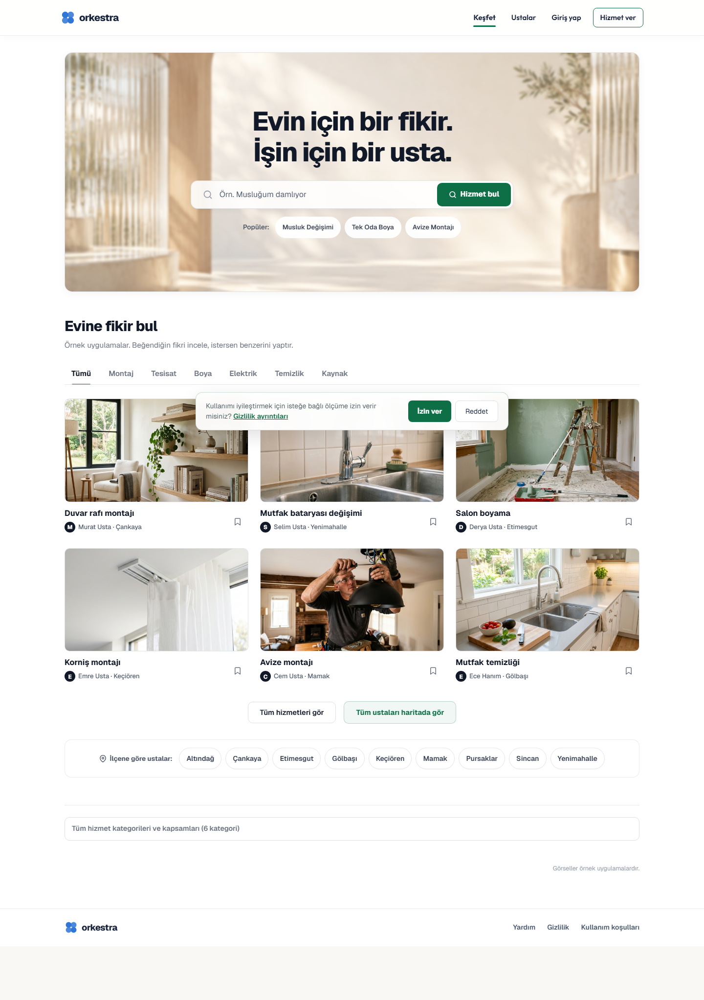
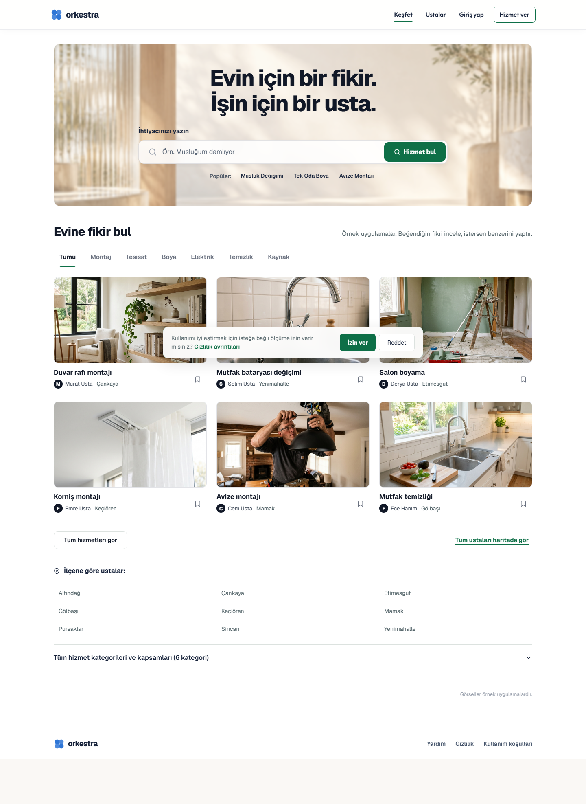
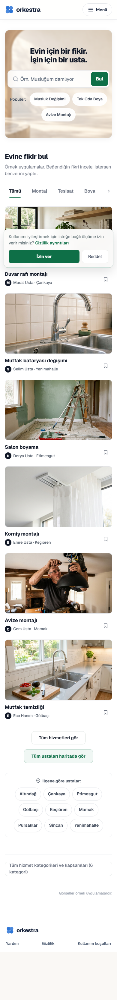
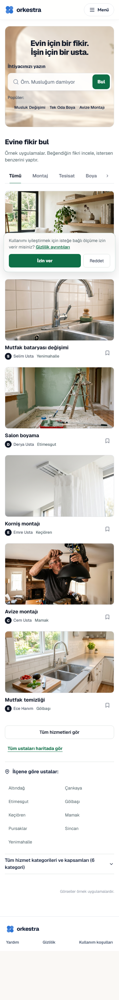

Landing: arama ve keşif hiyerarşisi
Mevcut Orkestra markası, cam hero görseli ve bütün hizmet akışları korundu. Gerçek yerel tarayıcı kayıtları; ilk ziyaret çerez paneli her iki durumda da görünür.
Masaüstü · 1440 px


Mobil · 390 px

